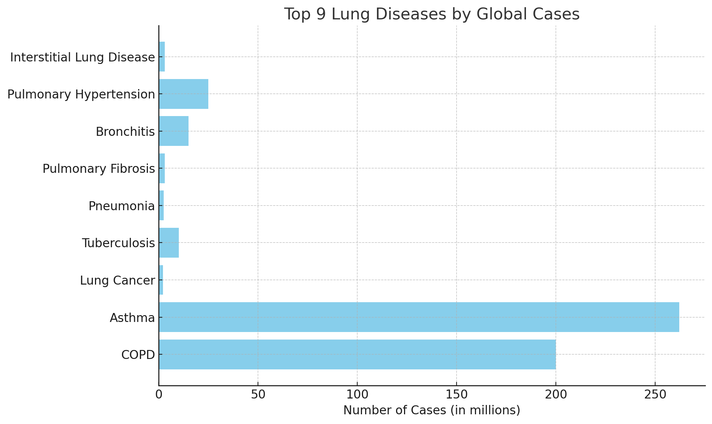

Lung diseases are a leading cause of illness and death worldwide, affecting the respiratory system in various ways. They range from chronic, lifelong conditions to acute infections, and their impact on daily life and healthcare systems is significant. Among the many lung diseases, certain conditions stand out due to their frequency, severity, and global health burden.
We have chosen the following nine lung diseases—Asthma, COPD, Lung Cancer, Tuberculosis, Pneumonia, Pulmonary Fibrosis, Bronchitis, Pulmonary Hypertension, and Interstitial Lung Disease—due to their high prevalence and significant impact on global health. These diseases collectively account for a substantial number of respiratory-related hospitalizations, deaths, and long-term healthcare costs. Asthma and COPD affect millions worldwide, while lung cancer and tuberculosis are leading causes of mortality. Pneumonia and bronchitis are common, especially in vulnerable populations, and pulmonary fibrosis and interstitial lung disease are chronic conditions requiring ongoing management.